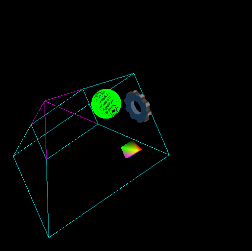

Computer Graphics-Assignment 2(Viewing)
By Kunal Agrawal(130050004) and Vegulla Kranthi(130050062)
In this assignment we simulated modelling viewing pipeline.
Here are the images of our models in various co-ordinate systems
-
World Coordinate System

-
View Coordinate System
-
Clip Coordinate System
-
Normalised Device Coordinate System
-
Device Coordinate System
Model inspection
- Keys AD for tranlating the entire scene in +ve and -ve x-axis repectively.
- Keys WS for tranlating the entire scene in +ve and -ve y-axis repectively.
- Keys ZX for tranlating the entire scene in +ve and -ve z-axis repectively.
- Left/Right arrows rotates the entire scene clockwise/anticlockwise about the y-axis respectively by 1 radian.
- Up/Down arrows rotates the entire scene clockwise/anticlockwise about the x-axis respectively by 1 radian.
- PgUp/PgDn arrows rotates the entire scene clockwise/anticlockwise about the z-axis respectively by 1 radian.